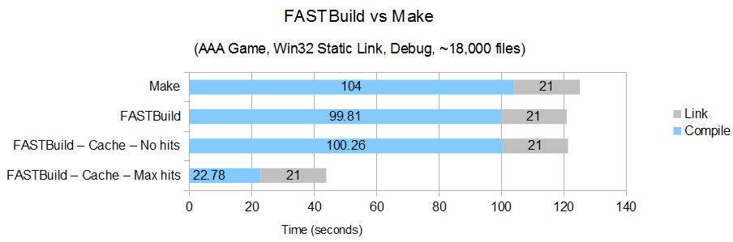
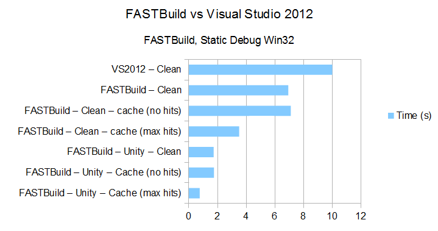
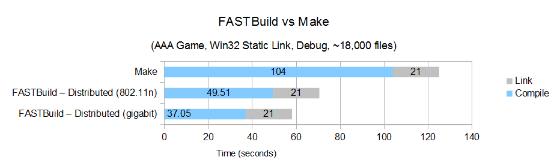

Features
- Efficient parallel compilation
- Local and network cache support
- Lightning fast "nothing to build"
- Unity/Blob builds with iteration enhancements
- Distributed compilation
|
|
- Build multiple platforms at once
- Build multiple targets at once
- Compile on Windows, OS X and Linux
- Target Windows, OS X, Linux, IOS, Android, Xbox 360, Xbox One, PS3, PS4, Wii & WiiU
- Supports MSVC, GCC, SNC, Clang, GreenHills, CodeWarrior & NVCC (CUDA)
|
- Tiny, self-contained executable
- Small run-time memory usage
- No external dependencies
- No installation required
|
|
- Modern configuration syntax
- Human readable errors
- Visual studio compatible
|
- Unit Test support
- Build statistics
- Progress bar
- Visual Studio project generation
|
Performance
FASTBuild was designed from the ground up to support parallel compilation. The highly optimized main build pipeline is designed to be as thin as possible, dispatching build tasks to worker threads to maximize parallelism.
FASTBuild has no artificial dependency bottlenecks like those present when compiling with Visual Studio/MSBuild. Unlike Visual Studio, FASTBuild is able to precisely manage the number of CPU cores used during a build avoiding excessive idle spots or excessive context switching due to spawning too many threads.
FASTBuild is a native Windows/OS X/Linux application, with all functionality built-in, avoiding the process-invocation overhead present in systems like make.
Processing and management of the build graph occurs in highly optimized C++ code, avoiding performance issues present in systems like Scons.
Build caching is supported as a built-in feature. A single line in the configuration file enables sharing of build results via a local or network cache.

FASTBuild knows the entire dependency graph before the build starts and can perform the absolute minimum IO required to determine which files need building. The build state is saved between invocations to minimize work required for incremental and "nothing" builds. The build configuration file is only parsed when it changes.
FASTBuild supports automatically generated Unity/Blob builds. By including many cpp files into single a single Unity (or Blob) file, compilation and link times can be greatly reduced. Unity in FASTBuild is compatible with network distribution and caching. Unity can automatically build "open for edit" (writable) files individually, allowing quicker iteration times when working.

FASTBuild supports distributed compilation.

Lightweight
FASTBuild is a single executable, weighing in at around 400KB.
FASTBuild uses very little memory, apart from some per-cpu work buffers. A typical 8 core machine has a footprint of under 100MB. More free memory means better IO caching by the OS.
FASTBuild requires no external DLLs, libraries, 3rd party software or executables (other than those belonging to your compiler(s)). It runs on a clean install of Windows (Vista, 7, 8.1 or server class equivalents), OS X (10.7+) or Linux.
The single executable for FASTBuild does not need installation. It can simply be copied to a machine and run, or checked into revision control and versioned alongside your build (ideal for automated build systems).
Platforms
FASTBuild can target mutiple (and any combination of) defined targets (or even all of them) simultaneously. This is ideal for building mutiple platforms when verifying compilation before check-in, or as part of an automated build system. This is especially useful if some of your targets have large linking bottlenecks, such as those introduced by Link-Time Code Generation.
As with buiding multiple platforms simultaneously, FASTBuild can build multiple versions of the same platform simulatenously. For example you can build the "debug", "release" and "retail" configurations in parallel. Again, this is ideal for maximizing performance on automated build servers or during pre-submit "sanity-check" compiles.
FASTBuild runs on Windows, Linux and OS X, targeting those platforms. It also supports all major consoles (PS3, PS4, Xbox360, XboxOne, Wii & WiiU) and smartphones (IOS & Android). Supported compilers are MSVC, GCC, SNC, Clang, GreenHills, CodeWarrior & CUDA. It will also work with any other syntactically compatible command line compilers, preparing it for more platforms in the future.
Easy to Use
FASTBuild has a uses a bespoke configuration language, designed to simplify the configuration of code compilation. Configuration files are orders of magnitude smaller than Visual Studio project files or makefiles and are human readable.
When FASTBuild fails to parse a configuration file, a human-readable error is emitted pinpointing the exact location of the error (in Visual Studio compatible) file(line:row) format.
FASTBuild output, whether it be build progress or config parsing errors, is output in Visual Studio compatible format. If you want to route FASTBuild output through Visual Studio, you will have the same error integration as if you were compiling using Visual Studio itself.
More...
FASTBuild contains built in support for Unit Tests. Unit tests are automatically compiled and executed only when relevant source is modified.
FASTBuild gathers build statistics during the build and can report them upon completion. A short compilation summary can be provided, or a full build report can be generated. This information can be used to further improve compile times by targetting large compilation units or libraries, and clearly measuring gains as you optimize compilation.
FASTBuild tracks build times across build and can use this information to estimate progress through the current build.
FASTBuild can generate vcxproj and vcxproj.filters to integrate FASTBuild compilation into the Visual Studio IDE.